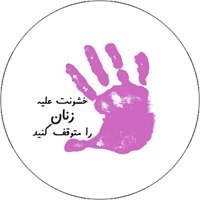

|
|

فعالیت های کمپینی ها برای 25 نوامبر
پنج شنبه4 آذر 1389
تغییر برای برابری - در آستانه ۴ آذر (۲۵ نوامبر) روز جهانی محو خشونت علیه زنان، فعالین کمپین یک میلیون امضا همچون سال های گذشته فعالیت هایی را در راستای اطلاع رسانی و ارتقای اگاهی درباره موضوع خشونت علیه زنان انجام داده اند.
برگزاری کارگاه آموزشی و کارگاه نوشتن خلاق با موضوع خشونت علیه زنان، تهیه دفترچه ای از روایت های زنان از خشونت، تهیه بروشورهای آموزشی برای اطلاع رسانی در مورد این روز و اشکال مختلف خشونت علیه زنان و همچنین تهیه پین هایی با موضوع توقف خشونت علیه زنان، از جمله این اقدامات است.

این فعالیت ها که در شهرهای مختلف ایران انجام شده است، همراه با سایر کشورها تا ۱۶ روز ادامه خواهد داشت.
برای آشنایی با تاریخچه 25 نوامبر نیز به این لینک بروید.
http://www.youtube.com/watch?v=RtR9RiMn_R4
بروشورهای تهیه شده در دو شهر رشت و تهران را می توانید از طریق لینک های زیر دانلود کنید و با پخش آنها به افزایش آگاهی در این زمینه و کاهش خشونت بر زنان کمک کنید.
بروشور تهران

بروشور رشت